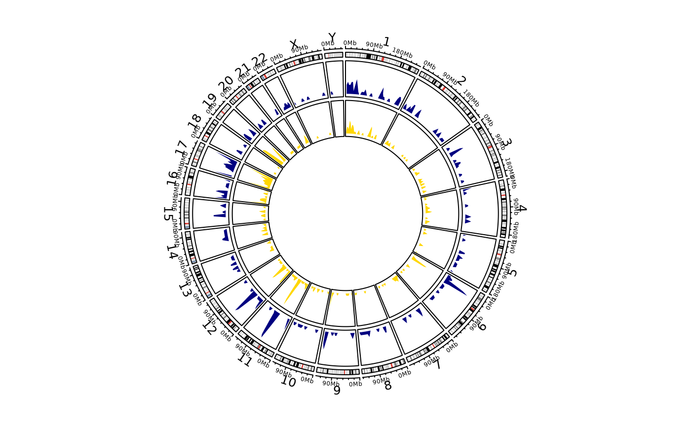

![[Stable]](figures/lifecycle-stable.svg) For this functionality
the suggested package
circlize
is required.
Please note that this function is a simple wrapper of basic
For this functionality
the suggested package
circlize
is required.
Please note that this function is a simple wrapper of basic circlize
functions, for an in-depth explanation on how the functions work and
additional arguments please refer to the official documentation
Circular Visualization in R
Arguments
- data
Either a single integration matrix or a list of integration matrices. If a list is provided, a separate density track for each data frame is plotted.
- gene_labels
Either
NULLor a data frame in bed format. See details.- label_col
Numeric index of the column of
gene_labelsthat contains the actual labels. Relevant only ifgene_labelsis not set toNULL.- cytoband_specie
Specie for initializing the cytoband
- track_colors
Colors to give to density tracks. If more than one integration matrix is provided as
datashould be of the same length. Values are recycled if length oftrack_colorsis smaller than the length of the input data.- grDevice
The graphical device where the plot should be traced.
default, if executing from RStudio is the viewer.- file_path
If a device other than
defaultis chosen, the path on disk where the file should be saved. Defaults to{current directory}/circos_plot.{device}.- ...
Additional named arguments to pass on to chosen device,
circlize::circos.par(),circlize::circos.genomicDensity()andcirclize::circos.genomicLabels()
Details
Providing genomic labels
If genomic labels should be plotted alongside genomic density tracks,
the user should provide them as a simple data frame in standard bed format,
namely chr, start, end plus a column containing the labels.
NOTE: if the user decides to plot on the default device (viewer in RStudio),
he must ensure there is enough space for all elements to be plotted,
otherwise an error message is thrown.
See also
Other Plotting functions:
CIS_volcano_plot(),
HSC_population_plot(),
fisher_scatterplot(),
integration_alluvial_plot(),
sharing_heatmap(),
sharing_venn(),
top_abund_tableGrob(),
top_cis_overtime_heatmap()
Examples
# \donttest{
data("integration_matrices", package = "ISAnalytics")
data("association_file", package = "ISAnalytics")
aggreg <- aggregate_values_by_key(
x = integration_matrices,
association_file = association_file,
value_cols = c("seqCount", "fragmentEstimate")
)
by_subj <- aggreg |>
dplyr::group_by(.data$SubjectID) |>
dplyr::group_split()
circos_genomic_density(by_subj,
track_colors = c("navyblue", "gold"),
grDevice = "default", track.height = 0.1
)

# }